Theo dõi khí nhà kính (GHG) tại Khu đô thị bằng UAV
Thu thập nồng độ CO₂ và CH₄ theo không gian, lập bản đồ phân bố và nhận diện hotspot phát thải hỗ trợ quản lý môi trường đô thị và lộ trình Net Zero.
3 Khoảng trống Lớn trong Quan trắc Khí quyển Đô thị
Khắc phục các rào cản cố hữu của mạng lưới trạm đo mặt đất thưa thớt và báo cáo kiểm kê truyền thống thiếu kiểm chứng thực địa.
Thiếu độ phủ không gian quan trắc GHG
Các trạm quan trắc cố định hoặc mô hình vi khí hậu riêng lẻ thường bố trí thưa thớt, dễ dàng bỏ sót tính không đồng nhất và các điểm phát sinh nồng độ cao cục bộ tại các khu dân cư, nút giao hay công trình.
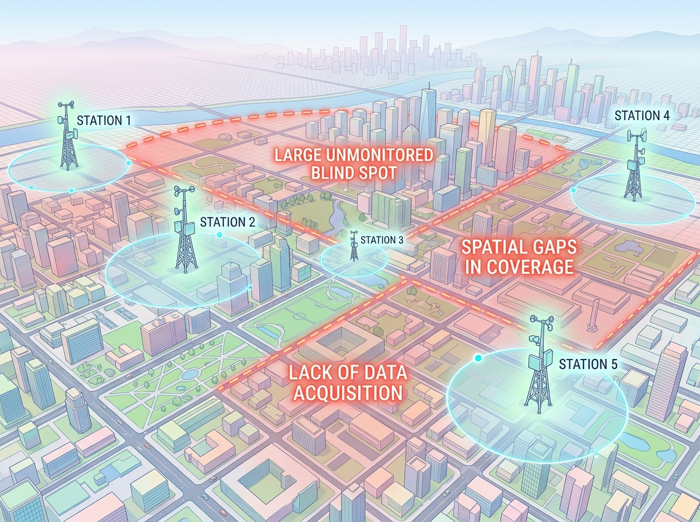
Khó nhận diện khu vực nồng độ cao (Hotspot)
Nồng độ khí nhà kính đô thị chịu tác động phức tạp từ luồng giao thông, hoạt động sản xuất công nghiệp, vi khí hậu và biến động lớp biên khí quyển; mắt thường hoàn toàn không thể nhận biết.
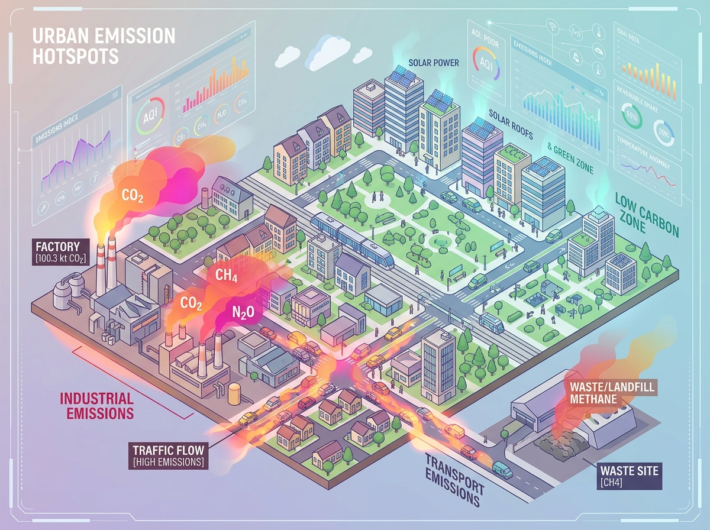
Khó kiểm chứng & Bổ sung số liệu kiểm kê
Báo cáo kiểm kê truyền thống (bottom-up) chỉ dựa trên số liệu hoạt động tiêu thụ, rất cần số liệu đo đạc khí quyển thực tế (top-down) để đối chiếu, kiểm chứng sai số và gia tăng độ tin cậy khoa học.
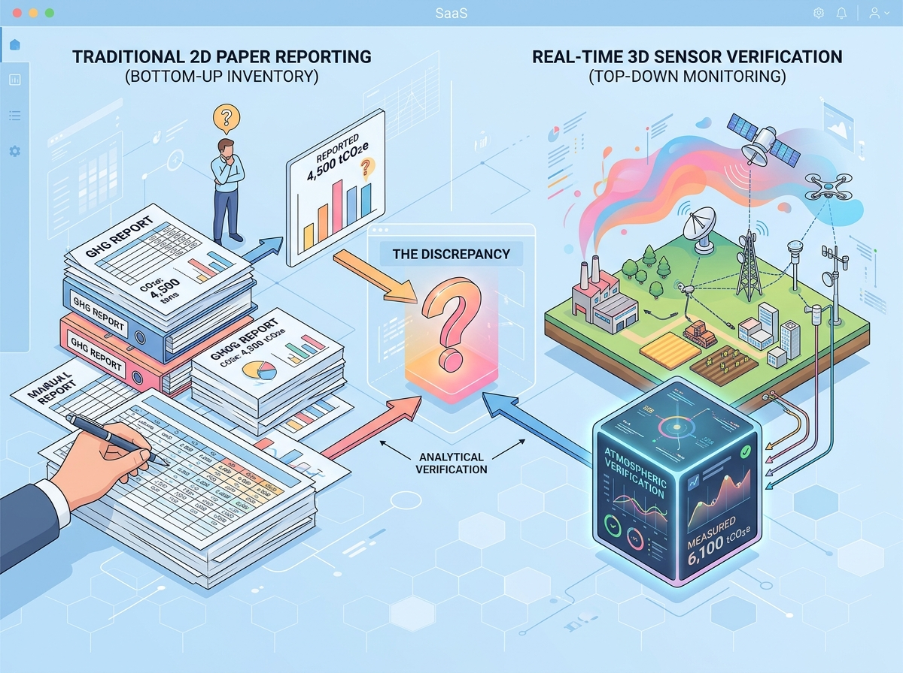
Khảo sát Khí nhà kính Đô thị bằng UAV Tích hợp Đa tầng
GASCOLAE cung cấp dịch vụ khảo sát khí nhà kính đô thị ở tầng thấp bằng UAV, tích hợp hệ đo/lấy mẫu CO₂ và CH₄, định vị GNSS và cảm biến vi khí hậu. Dữ liệu sau thu thập được hiệu chuẩn, kiểm soát chất lượng (QA/QC) và nội suy không gian (kriging) để lập bản đồ nồng độ và khoanh vùng các điểm hotspot phát thải. Khi dự án có đủ điều kiện số liệu và mô hình, kết quả quan trắc hỗ trợ đối chiếu với báo cáo kiểm kê đô thị (chuẩn GPC 1.1) theo cách tiếp cận tích hợp.
Tối ưu Hóa Quản lý Khí nhà kính với Độ phân giải Cao
Chuyển dịch từ đo đạc điểm rời rạc sang bản đồ không gian liên tục, cung cấp cơ sở dữ liệu xác thực cho lộ trình Net Zero đô thị.
Bổ sung độ phủ không gian tầng thấp bằng UAV
Khảo sát cơ động và linh hoạt theo tuyến bay và profile độ cao, cung cấp góc nhìn không gian bao quát với độ phân giải mức centimet thay vì chỉ dựa vào các phép đo điểm thô sơ tại mặt đất.
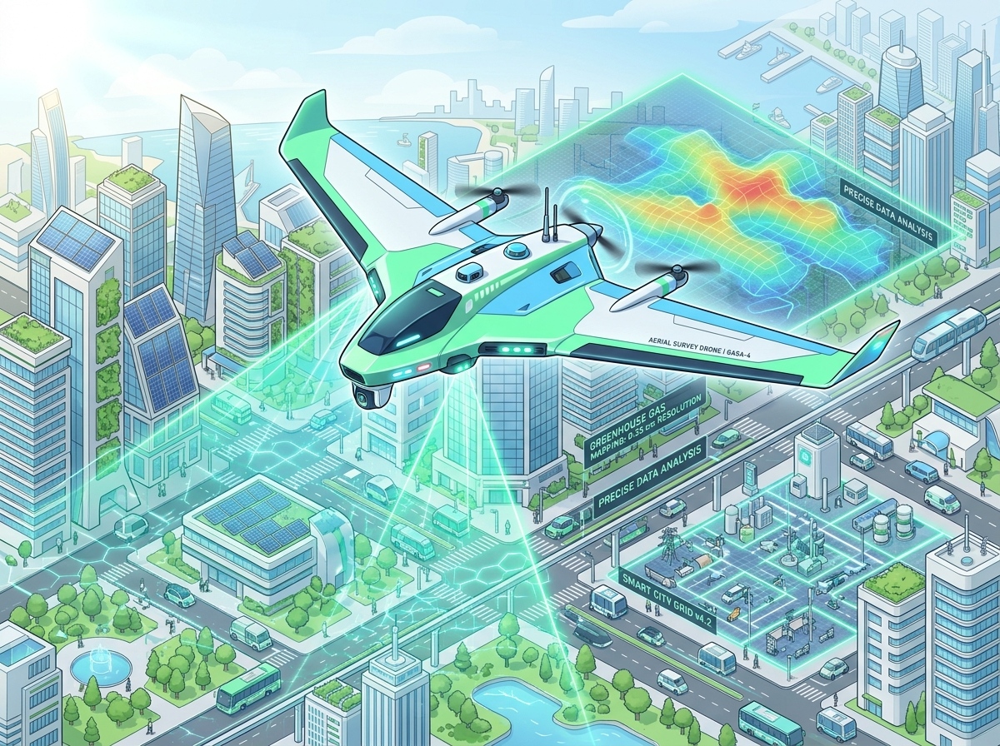
Hỗ trợ khoanh vùng Hotspot nồng độ cao
Cung cấp bản đồ nồng độ nội suy và tọa độ tâm các khu vực có nồng độ cao bất thường (bãi rác, khu công nghiệp, nút giao thông) để ưu tiên thanh tra, kiểm tra và xử lý triệt để nguồn xả thải.
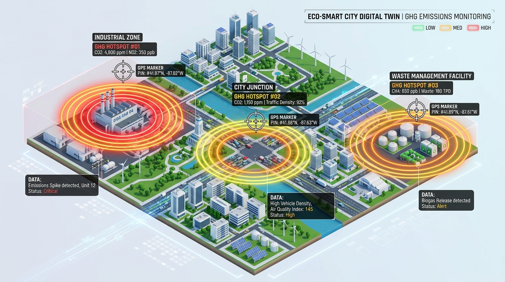
Hỗ trợ tối ưu hóa mạng trạm đo khí quyển
Cung cấp cơ sở khoa học độc lập để đánh giá khoảng trống và tính đại diện không gian của mạng lưới trạm quan trắc hiện hữu, từ đó nâng cao hiệu quả đầu tư và bố trí mạng trạm đo.
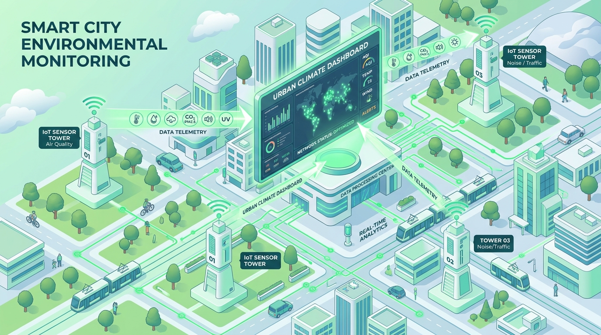
Tăng giá trị thông tin cho quản lý & Lộ trình Net Zero
Bổ sung số liệu thực nghiệm khách quan hỗ trợ đối chiếu kiểm kê phát thải đô thị (chuẩn GPC 1.1) và xây dựng kế hoạch hành động giảm phát thải khả thi theo Nghị định 83/2026/NĐ-CP.
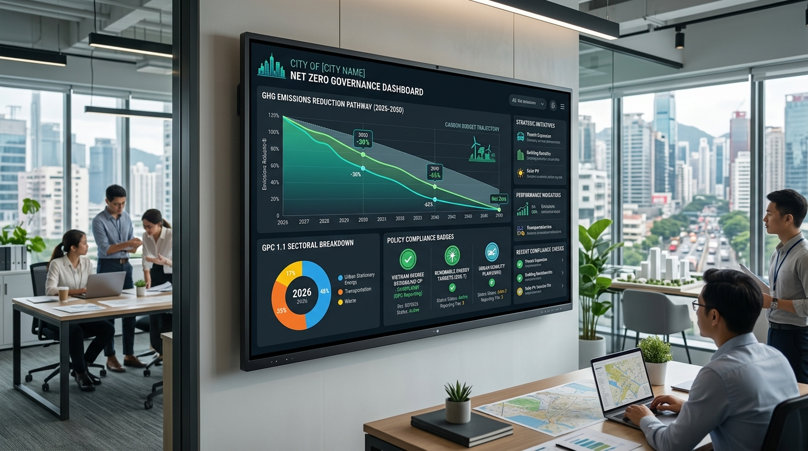
Năng lực Thu thập & Phân tích Dữ liệu Khí quyển
Kết hợp trang thiết bị bay không người lái chuyên dụng, hệ cảm biến đo khí vi lượng và thuật toán địa thống kê tiên tiến.
UAV Bay thấp & GNSS
Nền tảng bay thấp linh hoạt mang hệ đo theo tuyến và các mặt cắt profile độ cao, đồng bộ tọa độ không gian 3D và thời gian thực chuẩn xác.
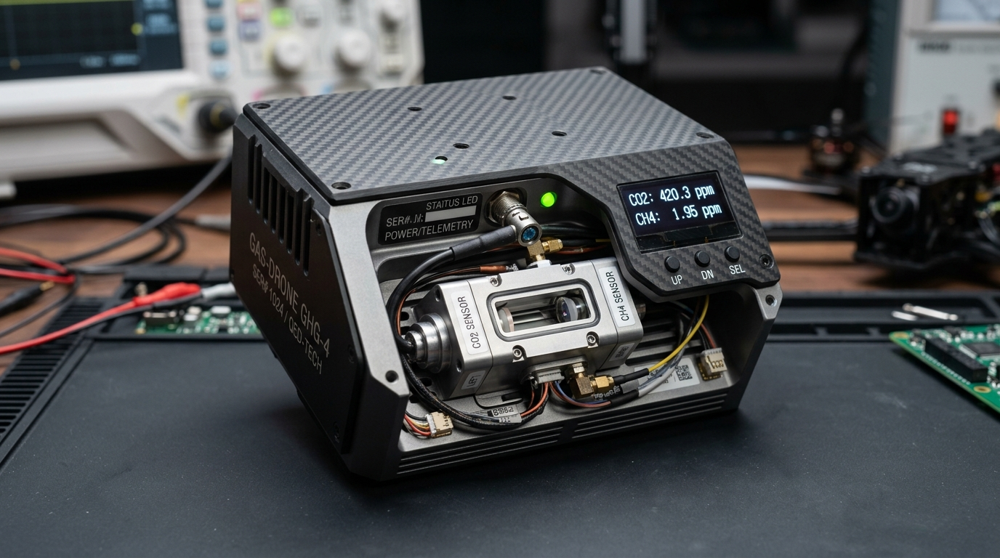
Hệ đo/lấy mẫu CO₂ & CH₄
Thu thập liên tục dữ liệu nồng độ hai khí nhà kính mục tiêu trọng yếu, tích hợp cảm biến vi khí hậu (nhiệt độ, độ ẩm, áp suất khí quyển).
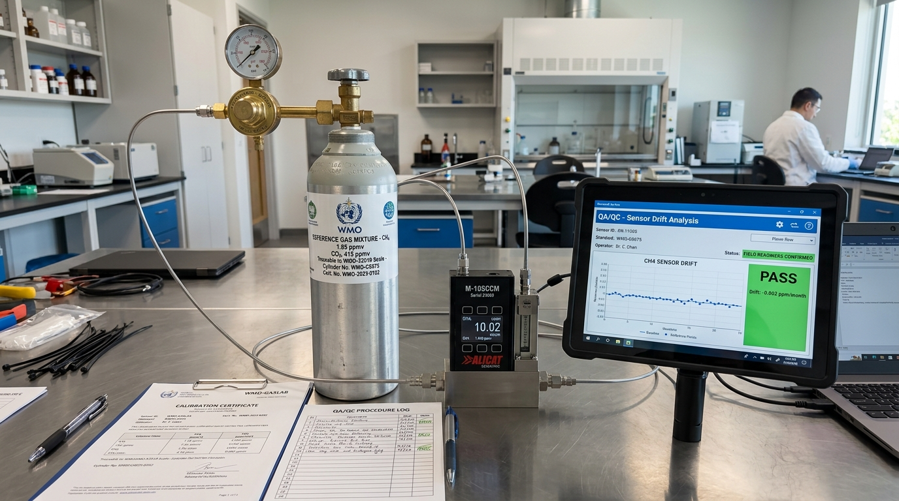
Quy trình QA/QC & Hiệu chuẩn
Hiệu chuẩn theo thang đo WMO (GAW 314 & GAW 318), kiểm tra khí chuẩn trước/sau ca bay nhằm kiểm soát và hiệu chỉnh trôi dạt (sensor drift).
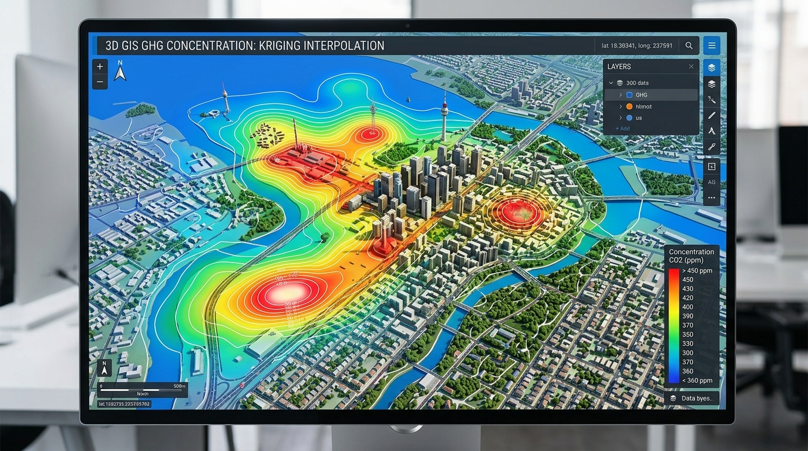
Phân tích Không gian & Kriging
Tách nồng độ nền khu vực, áp dụng thuật toán nội suy kriging dựng bản đồ phân bố nồng độ liên tục và định vị chính xác vùng hotspot phát thải.
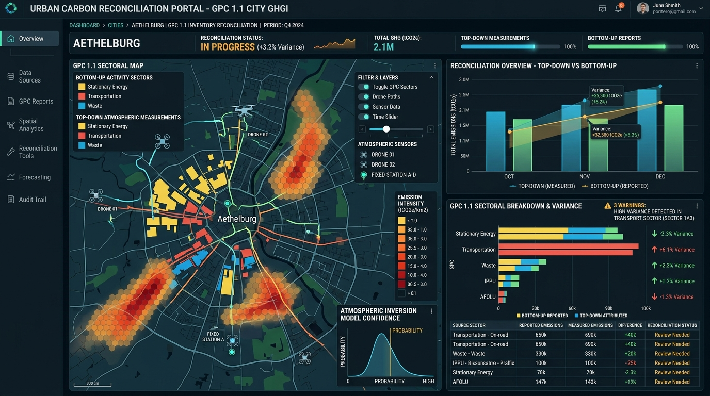
Tích hợp Đối chiếu Kiểm kê
Khung đối chiếu quan trắc khí quyển (top-down) với báo cáo kiểm kê phát thải đô thị (bottom-up) theo chuẩn GPC 1.1 khi dự án có đủ điều kiện số liệu.
Ai cần Dữ liệu Khảo sát Nồng độ Khí nhà kính?
Giải pháp chuyên sâu phục vụ chính quyền đô thị, cơ quan quản lý môi trường và các đơn vị vận hành hạ tầng phát thải lớn.
Lập bản đồ phân bố CO₂ / CH₄ đô thị
Cơ quan quản lý đô thị và viện nghiên cứu môi trường cần nắm bắt bức tranh toàn diện về sự phân bố không gian nồng độ khí nhà kính trên diện rộng theo mùa và thời điểm.
Khảo sát & Khoanh vùng Hotspot phát thải
Ban quản lý KCN, bãi chôn lấp chất thải, trạm xử lý nước thải và các nút giao thông trọng điểm cần phát hiện rò rỉ khí methane hoặc điểm tích tụ nồng độ cao bất thường.
Đánh giá & Tối ưu hóa Mạng trạm quan trắc
Sở Tài nguyên & Môi trường cần cơ sở khoa học độc lập để đánh giá tính đại diện không gian và phát hiện các khoảng trống quan trắc của mạng trạm đo mặt đất hiện hữu.
Bổ trợ Đối chiếu Kiểm kê Phát thải (GPC)
Các đơn vị xây dựng kế hoạch hành động ứng phó biến đổi khí hậu đô thị cần số liệu đo đạc thực địa khách quan để đối soát, kiểm tra độ bất định của báo cáo kiểm kê.
6 Bước Khảo sát Chuẩn hóa Khoa học & An toàn
Mọi chuyến bay đều tuân thủ chặt chẽ hành lang an toàn hàng không và quy chuẩn kiểm định đo đạc khí quyển.
Xác định mục tiêu & Phạm vi khảo sát
Thống nhất ranh giới khu vực bay, tọa độ vùng nghi ngờ phát thải cao, đối tượng khí cần quan trắc (CO₂/CH₄) và chỉ tiêu độ phân giải không gian.
Rà soát pháp lý & Thiết kế chuyến bay
Kiểm tra vùng cấm/hạn chế bay quân sự, hoàn thiện hồ sơ xin cấp Giấy phép bay chính thức theo Nghị định 288/2025/NĐ-CP và lập phương án bay an toàn đô thị.
Hiệu chuẩn & Kiểm tra an toàn trước bay
Thực hiện đo khí chuẩn WMO để kiểm soát độ trôi cảm biến và kiểm tra nghiêm ngặt danh mục checklist GO/NO-GO (tốc độ gió, mưa, sương mù, tầm nhìn).
Bay khảo sát thực địa bằng UAV
Vận hành UAV thu thập dữ liệu nồng độ CO₂/CH₄ liên tục theo tuyến và mặt cắt thẳng đứng, đồng bộ đồng thời tọa độ GNSS RTK và thông số vi khí hậu.
QA/QC sau bay & Lập bản đồ Kriging
Lọc nhiễu dữ liệu, đối chiếu khí chuẩn sau bay, tách nồng độ nền khí quyển, chạy mô hình nội suy địa thống kê kriging và khoanh vùng các điểm hotspot phát thải.
Nghiệm thu & Bàn giao hồ sơ dữ liệu
Bàn giao đầy đủ bộ dữ liệu GIS, bản đồ số nồng độ, danh mục hotspot và báo cáo kỹ thuật công bố minh bạch mức độ bất định (uncertainty) dữ liệu.
Lựa chọn Cấu hình Khảo sát Phù hợp
Đáp ứng linh hoạt từ nhu cầu đo đạc kiểm tra cơ bản đến các dự án giám sát phát thải tích hợp phục vụ mục tiêu Net Zero.
Khảo sát cơ bản
Đo đạc nồng độ CO₂/CH₄ tầng thấp và lập báo cáo kỹ thuật hiện trường.
- ✓ UAV mang cảm biến đo CO₂ và CH₄
- ✓ Định vị tọa độ GNSS đồng bộ thời gian thực
- ✓ Quy trình QA/QC hiệu chuẩn trước & sau bay
- ✓ Bảng số liệu đo đạc đã lọc nhiễu chuẩn hóa
- ✓ Báo cáo kỹ thuật hiện trường & vi khí hậu
Bản đồ không gian & Hotspot
Cấu hình Level 1 + Nội suy kriging và khoanh vùng các điểm hotspot nồng độ cao.
- ✓ Toàn bộ quyền lợi của Level 1
- ✓ Tách nồng độ nền khí quyển đô thị
- ✓ Thuật toán nội suy không gian Kriging
- ✓ Bản đồ phân bố nồng độ định dạng GIS (GeoTIFF)
- ✓ Danh mục tọa độ tâm và khoanh vùng Hotspot
- ✓ Báo cáo phân tích thống kê diện tích phát thải cao
Giám sát tích hợp & Đối chiếu GPC
Cấu hình Level 2 + Khung đối chiếu kiểm kê GPC 1.1 và Dashboard GIS theo dõi chuỗi thời gian.
- ✓ Toàn bộ quyền lợi của Level 2
- ✓ Khung đối chiếu quan trắc top-down với inventory bottom-up
- ✓ Phân tích phù hợp chuẩn kiểm kê đô thị GPC 1.1
- ✓ Đánh giá tính đại diện và khoảng trống mạng trạm đo
- ✓ Bàn giao WebGIS Dashboard đa thời gian
- ✓ Tư vấn chuyên gia giảm phát thải phục vụ Net Zero
Định dạng Dữ liệu Chuẩn hóa GIS & Báo cáo Chuyên sâu
Sản phẩm bàn giao tương thích trực tiếp với các hệ thống thông tin địa lý GIS của cơ quan quản lý và phần mềm mô hình hóa khí quyển.
Bộ dữ liệu đo đạc QA/QC
Tệp dữ liệu nồng độ CO₂ và CH₄ gắn nhãn thời gian, tọa độ GNSS (kinh độ, vĩ độ, độ cao bay) và thông số khí tượng đã được lọc nhiễu và chuẩn hóa.
Bản đồ phân bố nồng độ GHG
Bản đồ nội suy không gian kriging thể hiện các dải nồng độ CO₂ và CH₄ liên tục trên toàn khu vực khảo sát ở định dạng GeoTIFF độ phân giải cao.

Báo cáo Hotspot & Thống kê
Lớp dữ liệu vector khoanh vùng các khu vực phát thải bất thường kèm danh mục tọa độ tâm, diện tích ảnh hưởng và mức độ vượt ngưỡng so với nồng độ nền.
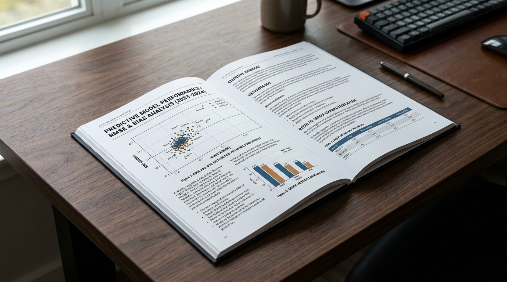
Báo cáo Phương pháp & Chất lượng
Tài liệu thuyết minh chi tiết phương pháp bay, kết quả thử nghiệm khí chuẩn WMO, điều kiện khí tượng và đánh giá mức độ bất định (uncertainty) dữ liệu.
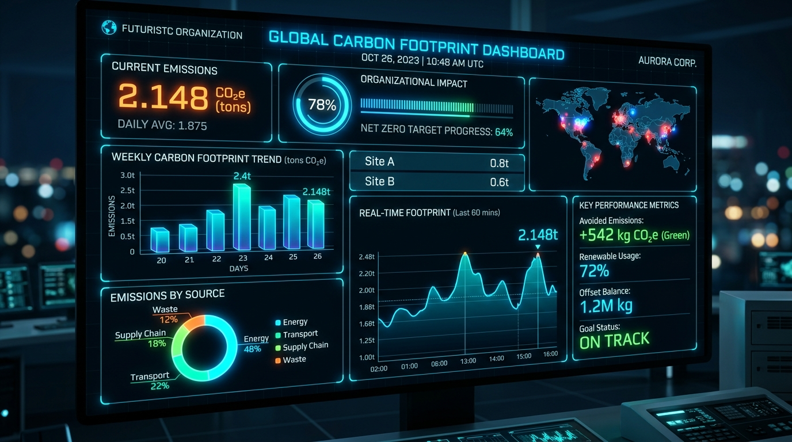
Báo cáo đối chiếu kiểm kê (GPC 1.1)
Báo cáo so sánh đối soát độc lập giữa số liệu quan trắc thực địa với hồ sơ kiểm kê phát thải đô thị, phục vụ xây dựng báo cáo phát thải chính quyền địa phương.
Tại sao Chọn Giải pháp Quan trắc GHG của GASCOLAE?
Đơn vị tiên phong ứng dụng công nghệ hàng không tầng thấp vào giải quyết bài toán khí hậu đô thị tại Việt Nam.
Định vị tiên phong tại Việt Nam
Giải pháp quan trắc GHG đô thị bằng UAV bay thấp chuyên dụng, cung cấp số liệu nồng độ CO₂/CH₄ thực nghiệm có độ phân giải không gian cao mà trạm đo truyền thống không đáp ứng được.
Chuẩn hóa khoa học quốc tế
Quy trình đo đạc thực địa và QA/QC được thiết kế bám sát hướng dẫn WMO GAW 314 và GAW 318, đảm bảo tính minh bạch, khả năng lặp lại và độ tin cậy khoa học cao nhất.
Tuân thủ pháp lý & An toàn bay nghiêm ngặt
Mọi hoạt động bay đều được thẩm định và cấp phép bay chính thức theo Nghị định 288/2025/NĐ-CP, kiểm soát nghiêm ngặt hành lang an toàn không gian đô thị đông dân cư.
Hỗ trợ chính sách Net Zero & GPC 1.1
Dữ liệu đầu ra hỗ trợ trực tiếp các mục tiêu quản lý và theo dõi tiến độ giảm phát thải theo Nghị định 83/2026/NĐ-CP, phù hợp chuẩn kiểm kê phát thải đô thị quốc tế GPC 1.1.
Câu hỏi Thường gặp
Giải đáp những thắc mắc kỹ thuật và quy trình triển khai dịch vụ S0274.
Khảo sát Nồng độ Khí nhà kính & Định vị Hotspot cho Đô thị của bạn
Điền thông tin yêu cầu khảo sát để Đội ngũ Kỹ thuật GASCOLAE liên hệ tư vấn phương án bay và dự toán kinh phí tối ưu nhất.